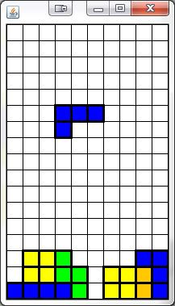

At the moment we’ve got a good set up for all of the stationary Blocks in the Tetris game. It’s now time to focus on the moving portion.
Previously you created an empty class named TetrisPiece. Now we’re going to implement it. The idea behind each piece is that it’s made up of 4 Blocks arranged in a specific way. The Blocks must be able to rotate and still maintain their shape and general location.
In this assignment we will first create a model for a TetrisPiece. Secondly we will incorporate it with our TetrisModel. And finally, we will modify the TetrisView so that it paints the TetrisPiece along side the other Blocks.
The TetrisPiece will be in charge of an ArrayList of four Blocks. The TetrisPiece will set their initial positions and then have methods that will affect all of the Blocks.
The trickiest part of dealing with the TetrisPiece is figuring out how to rotate the Blocks. The way that we are going to do it is to imagine that every Block in the piece belongs to a smaller 2D grid. The TetrisPiece will keep track of a single location that will be referred to as the anchor, and will represent location (0,0) of the smaller grid. The Location of all the Blocks in the piece is actually their location within the smaller grid, as opposed to their location within the larger grid.
For Example: Consider the situation below:

Instead of imagining the piece as Blocks with large row and column values, imagine it as part of a smaller grid.
The Blocks of the piece are unaware of where they are within the bigger grid. They only know their location relative to the anchor point (which acts as (0,0)). This makes it so that if we want to move all the piece's blocks at the same time, you simly have to move the anchor location.
TetrisPiece needs the following instance fields:
-
a Color that this piece will represent itself with.
- a Location to represent the anchor location
-
ArrayList<Block> to manage the four blocks that the piece has a Location to
represent the anchor location
-
a TetrisGrid variable. In order to know if it can move in the grid, the
TetrisPiece will want to access the grid from time to time. This will be an
important link.
-
An int to represent the size of the grid that holds the pieces. Depending on the
piece, it sits in a smaller grid of size 2, 3, or 4.
The Constructor for the TetrisPiece should take in a TetrisGrid as a parameter and assign it to the instance field. For now, we are going to look at a very specific piece just to get the basics down. It’s the Blue piece in the diagram above, and it’s known as the L. For now set the color field to blue, the anchor to be (2,3), and the size to be 3. Don’t forget to construct an ArrayList<Block> and add four Blocks to it (they don’t need Locations yet).
Note: The Blocks in the TetrisPiece are not actually added to the TetrisGrid until the TetrisPiece is about to be replaced with a new piece. For now, do not add any of the Blocks to the TetrisGrid, they are fine as an ArrayList of Blocks.
Add methods getBlocks(),getAnchor(), and getSize(), which will return the ArrayList<Block>, a Location, and an int respectively.
Add a setAnchor, setSize, and setColor method. The setColor should set this instance field to the incoming Color, as well as set all of the Block's colors.
Override the toString method to return a String that first contains the String "TetrisPiece:" and is followed by the toString of each of the four Blocks that it has.
The Block class has two different purposes now. Previously their Location represented a 'global' grid location, but now we need their Location to represent a location relative to the anchor of a TetrisPiece. For consistency purposes, we need the getLocation methods of both types to be global.
Create a new class named PieceBlock, which is an extension of the Block class. This means that you will inherit a Color and Location instance field. The only new instance field that you should add to the PieceBlock class is a TetrisPiece variable.
The constructor of the PieceBlock should take in a TetrisPiece and a Location. Use super to call Block's constructor and set up a block whose color matches the incoming TetrisPiece's color. Don't forget to also assign the TetrisPiece to your new instance field. This represents the piece that the Block belongs to.
This is a little confusing. Now the inherited location variable is considered the 'relative' location. The Block keeps track of the piece that it belongs to so that it can use that piece's anchor piece to determine its 'global' location.
Add a method with the following header:
public Location getRelativeLocation()
This method's job is to return the 'relative' location, but that's what the inherited getLocation method already returns. implement this method so that it returns the result of the inherited getLocation method.
Now override the inherited getLocation method
public Location getLocation()
Since this method should return the 'global' Location, you will need to know both the 'relative' Location and the 'anchor' Location to accomplish this. Access the relative location using the inherited getLocation method, and then access the TetrisPiece's anchor Location. The returned value should be the sum of the two Locations (You can use the 'plus' method you wrote for this purpose)
Now override the toString method. Currently the toString will only contain the 'relative' values. Add on to it the 'global' location as well. One possible toString could say:
Block: Color[R:0 G:0 B:255] Loc(1,0) - Global Loc(3,3)
In the above example, the Block was given a Blue TetrisPiece with an anchor of (2,3) and also a Location of (1,0). The relative location is (1,0), but the global location is (3,3).
In order to get the starting locations assigned to the Block, we are going to take them out of the constructor and put them into a separate method named setInitialLocations(). First, make sure that the last thing the constructor calls is the setInitalLocations method, and then add that very method to the TetrisPiece. The method should set the Locations of the four PieceBlocks in the ArrayList to the exact locations of the PieceBlocks in the diagram below. Since PieceBlock's constructor takes in a TetrisPiece, use 'this' in that location to pass yourself in as the piece.
Run the following Tester method:
public static void pieceTester()
{
TetrisPiece piece = new TetrisPiece(null);
System.out.println(piece);
}
Something similar to the following should be printed:
TetrisPiece:
Block at Loc(1, 0) with Color[R:0 G:0 B:255]
Block at Loc(1, 1) with Color[R:0 G:0 B:255]
Block at Loc(1, 2) with Color[R:0 G:0 B:255]
Block at Loc(2, 0) with Color[R:0 G:0 B:255]
Now that we've set up the basic TetrisPiece object we can insert it into the project by:
- Incorporating it into the TetrisModel
- Modifying TetrisView so that it paints the piece.
Some of this work is already done for us. Previously, the TetrisModel class was set up to have a reference to the empty TetrisPiece class. That reference remained null because there was nothing done in the constructor to set up the variable. Now that we’ve got the TetrisPiece filled out it’s time to go to the TetrisModel and fill it in.
At some point the TetrisModel should be able to load a new random piece into the instance field. Add a method named newPiece, which wil ltake in no parameters and simply load a new TetrisPiece into the instance field.
Once you've done that, make sure that the constructor makes a call to the newPiece method so that it starts with a piece on the grid.
We are going to treat the piece similar to how we’ve painted the lines and the grid blocks. Your TetrisView class should already have an empty paintPiece method from before. Now it’s time to fill it in.
The purpose of the paintPiece method in the TetrisView class is to paint a piece if there is one. First we must be a little cautious about how we handle the TetrisPiece. You can call your TetrisModel’s getPiece method to access whatever’s stored in as the TetrisPiece, but it’s possible that it’s null. After you’ve accessed the Model’s TetrisPiece, check to see if it’s null and simply return; if it is. A null piece means that there is no need for the paintPiece method to continue (and if it's null it would crash our program to continue).
After that, it’s time to paint each of the TetrisPiece’s Blocks. Access the piece's ArrayList<Block> in order to get this done. Even though they are technically PieceBlocks, the paintBlock method will still work.
Now that we’ve got the basic structure to model and view a TetrisPiece, it’s time to test it out. Run the Tetris class' main method. Previously we set up the project to load other blocks on the grid. Those should still be there in addition to the piece that we’ve created.